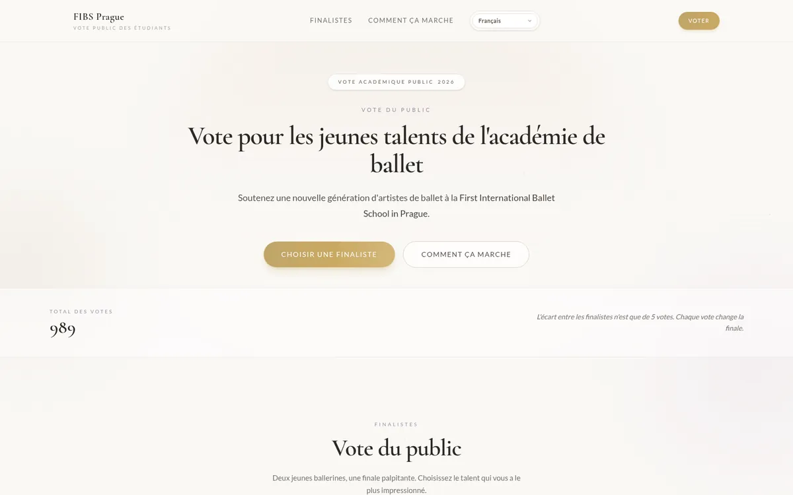
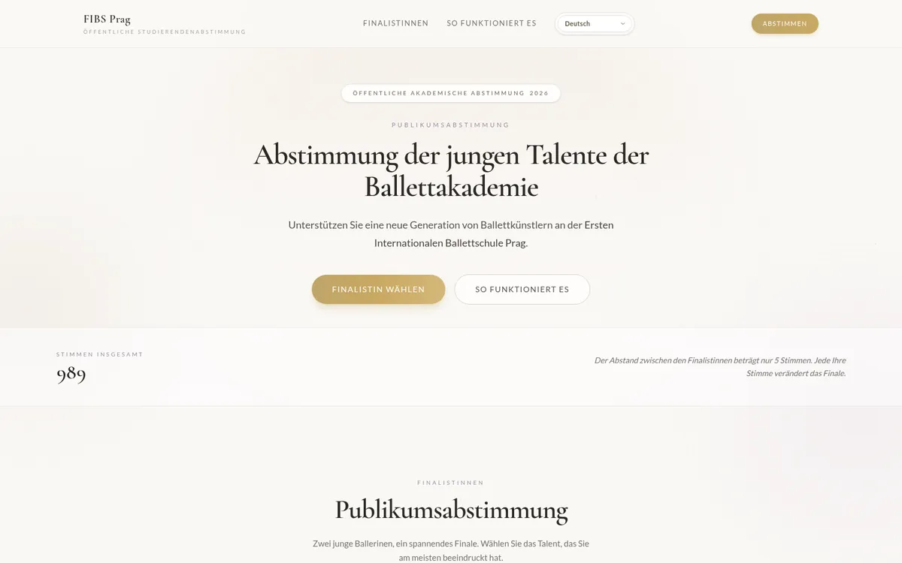
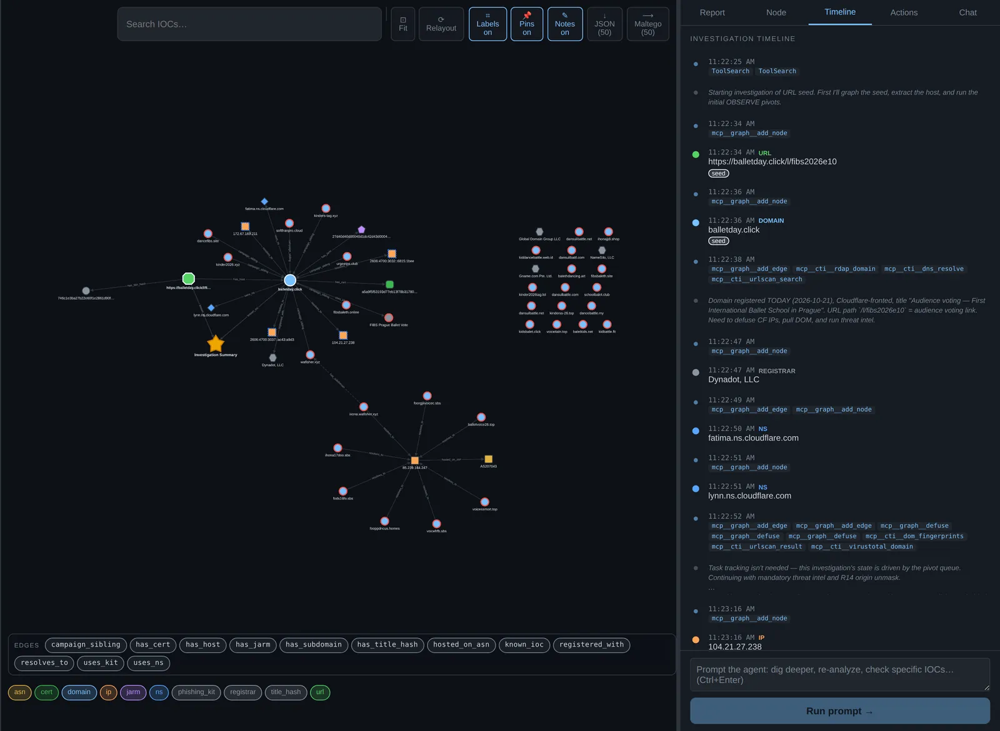
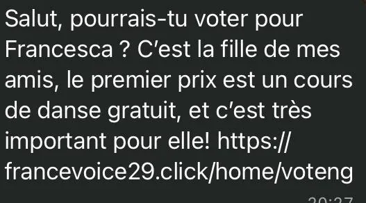
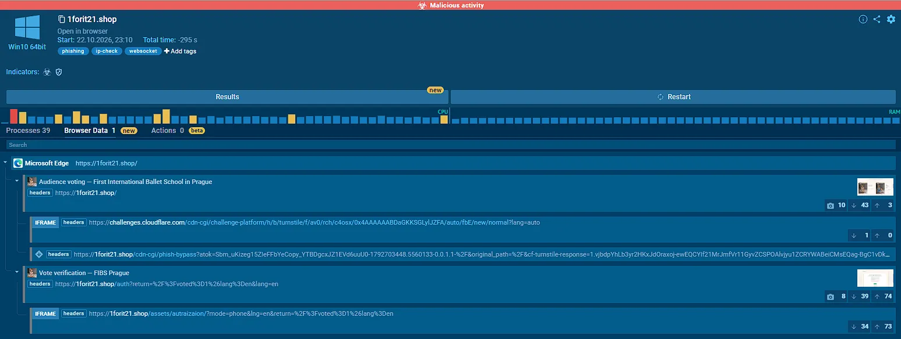
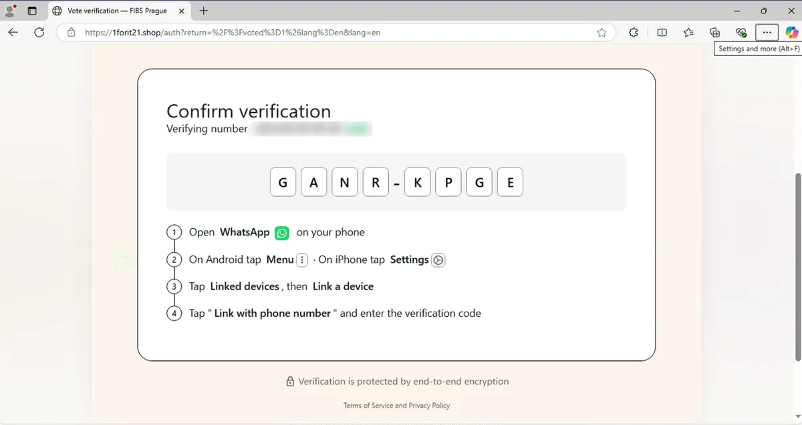
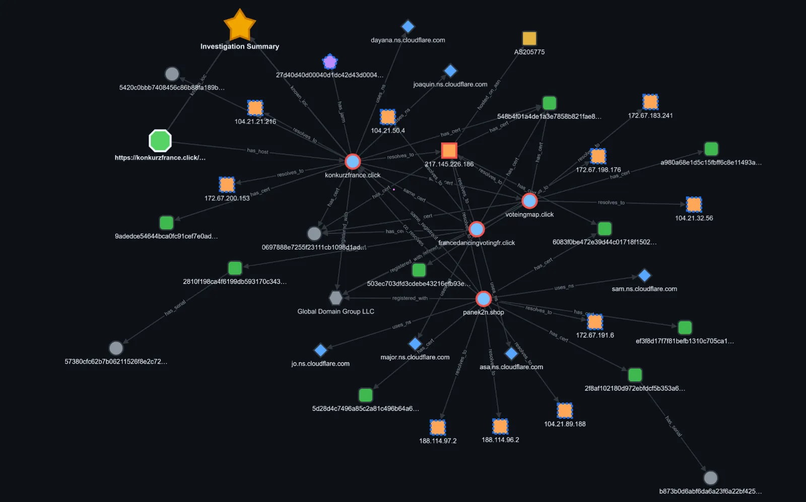
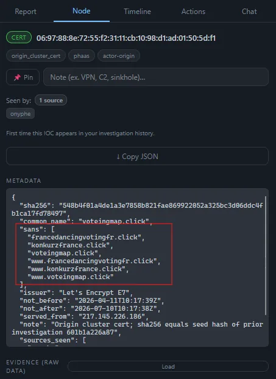
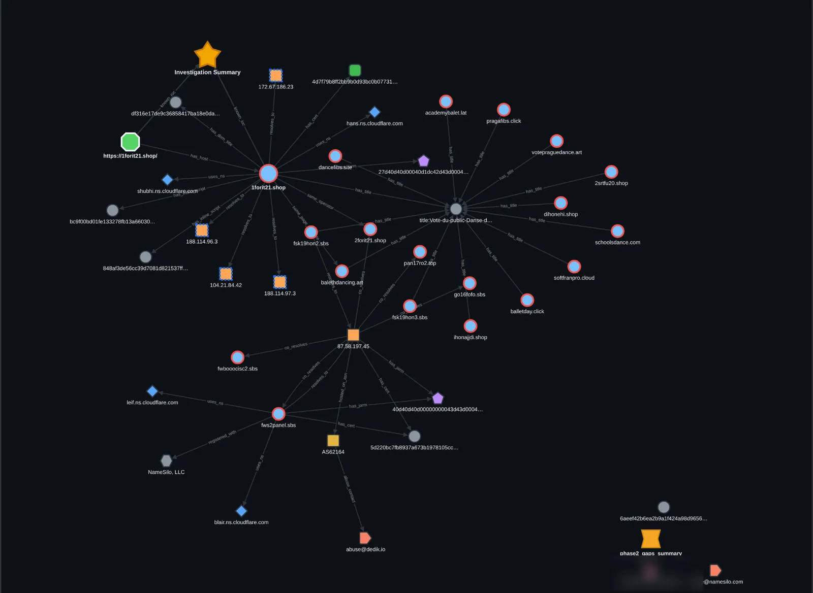
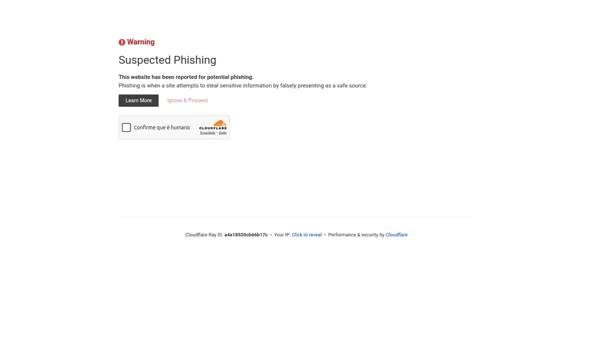

عند الظهيرة، تصلني رسالة تطلب مني التصويت لابنة أصدقاء في مسابقة للباليه. وفي المساء يتلقى اثنان من أقاربي رسالة شبه مطابقة. وراء هذه الخدمة الصغيرة: آلة لسرقة حسابات واتساب، تعمل منذ أشهر.
Alexandre Pinoteauبمساعدة Bounce
مقالان لتحقيق واحد. يمكنك الانتقال بينهما في أي وقت.
? جهة اتصال
مرحبًا 👋، أريد أن أطلب منك مساعدة صغيرة! هل يمكنك أن تمنح صوتك لصوفي، ابنة أصدقائي؟ هي في مسابقة قد تفوز فيها بمنحة دراسية وبفرصة للعرض على المسرح.
https://balletday[.]click/l/fibs2026e10
الرسالة التي وصلت في 21 أكتوبر 2026. الرابط معطَّل عمدًا.
إن لم تقرأ إلا هذا
لا تنقر. المسابقة الحقيقية لا تحتاج أبدًا إلى أن تسجّل الدخول عبر واتساب كي تصوّت.
لا تكتب أبدًا رقمك ثم رمز واتساب في موقع. هذا الرمز هو مفتاح حسابك. من يتلقاه يقرأ محادثاتك ويتكلم باسمك.
تحقّق الآن في واتساب ← الإعدادات ← الأجهزة المرتبطة. جهاز لا تعرفه؟ افصله.
فعّل التحقق بخطوتين (الإعدادات ← الحساب). يمنع سرقة حسابك بالرمز الذي يصلك برسالة نصية. لكنه لا يكفي ضد إضافة جهاز جديد: ومن هنا القاعدة رقم 2.
تبدو الرسالة عادية. تأتي من جهة اتصال، وهي مهذبة، وتطلب خدمة لا تكلّف شيئًا. ولهذا بالذات تنجح. تلقيتها في 21 أكتوبر. وفي المساء نفسه حوّل لي شخصان من عائلتي رسالة شبه مطابقة، هذه المرة باسم « Eliška » و« درس رقص مجاني ».
بدل أن أكتفي بحذفها، أردت أن أفهم ما وراءها. هذا ما وجدته.
01كيف تعمل عملية الاحتيال، في خمس خطوات
أحد معارفك وقع في الفخ قبلك
تصلك الرسالة من حساب واتساب حقيقي لأحد معارفك. لكنه لم يعد هو من يكتب: حسابه سُرق بالطريقة نفسها قبل أيام قليلة.
طلب لطيف جدًا
« صوّت لابنة أصدقائي، الأمر مهم بالنسبة لها. » طفلة، وحلم، ونقرة واحدة: لا أحد يريد أن يرفض.
صفحة مسابقة جميلة
موقع أنيق، وراقصتان صغيرتان، وعدّاد أصوات متقارب (497 مقابل 492). كل شيء مزيّف: المدرسة والصور والأرقام.
الفخ: « أكّد تصويتك عبر واتساب »
« لمنع التلاعب »، تقلّد الصفحة واتساب وتطلب رقمك ثم رمزًا. هذا الرمز هو واتساب يطلب إذنك لفتح حسابك على حاسوب المخترق.
وتبدأ الدورة من جديد، مع جهات اتصالك
يقرأ المخترق محادثاتك ويكتب إلى دفتر عناوينك كله باسمك وصورتك: « صوّتوا لصوفي ». وأحيانًا يطلب أيضًا مالًا « بشكل عاجل ».
لماذا تصلك هذه الرسالة من « صديق »: كل ضحية تصبح المُرسِل التالي. إنها عملية احتيال تنسخ نفسها بنفسها.
02الرمز هو مفتاح بيتك
يتيح لك واتساب استخدام حسابك على حاسوب (واتساب ويب) أو جهاز لوحي. ولربط جهاز جديد طريقتان: مسح رمز QR، أو تلقّي رمز تكتبه على هاتفك. صُمّم هذا لك، لتقرأ رسائلك على حاسوبك.
يستغل الفخ هذه الآلية نفسها بالضبط. حين تكتب رقمك في الصفحة المزيفة، فإن خادم المخترق هو الذي يطلب من واتساب: « أريد ربط جهاز بحساب صاحب هذا الرقم ». فيرسل واتساب، بحذر، طلب تأكيد إلى هاتفك. عندها تقول لك الصفحة المزيفة: « اكتب هذا الرمز لتأكيد تصويتك ». فتفعل. وتكون قد فتحت الباب للتو.
الرمز ليس رمز تصويت. إنه إذنك. فحين يُربط جهاز المخترق، يرى رسائلك الجديدة ويرسل رسائل باسمك، دون أن ينطفئ هاتفك أو يتغير فيه شيء.
الخطوة 2. تعرض الصفحة رمزًا وتشرح لك أين تكتبه في واتساب. هذا ليس رمز تصويت.
لقطات حقيقية، التُقطت في بيئة معزولة (any.run) برقم وهمي. الصفحة هنا بالإنجليزية؛ وهي تتكيف مع لغة الزائر. وهي فعلًا توجّهك إلى الأجهزة المرتبطة: وهذا بالضبط الطريق الذي يسلكه المخترق ليدعو نفسه إلى حسابك.
الصورة التي يجب أن تبقى في ذهنك
الرمز الذي يُطلب منك لا علاقة له بتصويت: إنه نسخة من مفاتيحك. لن تعطي أبدًا نسخة من مفاتيح بيتك لغريب كي « يؤكد مشاركتك » في مسابقة. وهنا الأمر نفسه. بهذه النسخة يدخل بيتك متى شاء، ويقرأ بريدك، ويكلّم أقرباءك منتحلًا شخصيتك. ولأنك احتفظت بمفاتيحك أنت، فلا تلاحظ شيئًا.
03لماذا الراقصات دائمًا؟
في أبريل، تلقيت عملية الاحتيال هذه من قبل: « هل يمكنك التصويت لـ Francesca؟ هي ابنة أصدقائي، والجائزة الأولى درس رقص مجاني ». وفي أكتوبر تتلقى عائلتي النص نفسه حرفيًا، باسم « Eliška ». وأنا، نسخة باسم « صوفي ». الموضوع لا يتغير، لأنه مختار بإتقان مخيف:
طفل: نخفض حذرنا، ويبدو الرفض بخلًا.
تصويت: فعل مجاني وسريع نقوم به دون تفكير. لا شيء يُدفع، إذًا لا شيء مريب.
صديق يطلب: الرسالة تأتي من حساب نعرفه. لا نشك في أقربائنا.
« منع التلاعب »: العذر المثالي لطلب الاتصال عبر واتساب. يبدو الأمر جادًا حتى.
ويضيف الباليه لمسة راقية وعالمية: « المدرسة الدولية الأولى للباليه في براغ ». هذه المدرسة موجودة فعلًا، ولا علاقة لها بكل هذا: المحتالون يسرقون اسمها ليبدوا موثوقين. أما الصفحة المزيفة فتوجد في اثنتي عشرة لغة على الأقل.

الصفحة المزيفة بالفرنسية.

هي نفسها بالألمانية. يتكيف الموقع مع بلد الزائر.
لقطات عامة التقطها urlscan.io، وهي خدمة « تزور » المواقع المشبوهة بدلًا منا. لم أدخل أي شيء في هذه الصفحات.
04كيف نحقق في عملية احتيال كهذه
الموقع الإلكتروني أشبه بمتجر. له لافتة (الاسم، balletday.click)، وعنوان (الخادم الذي يُستضاف عليه)، وبطاقة هوية (شهادة الأمان الخاصة به، القفل الصغير)، وسجل تجاري (من اشترى الاسم، ومتى). والمحتالون يخفون كل هذا. لكن هناك دائمًا تقريبًا أثر يظهر.
التحقيق هو شدّ هذه الآثار واحدًا بعد الآخر. في هذه الحالة استخدمت Bounce، أداة تحقيق آلية أطوّرها: نعطيها رابطًا مشبوهًا، فتتبع الخيوط واحدًا واحدًا وترسم خريطة لما تجده. وما تعود به يجب بعد ذلك أن يُراجَع ويُتحقَّق منه، خيطًا خيطًا.
وفيما يلي ما جرى فعليًا في 21 أكتوبر:
تصلني الرسالة. اسم النطاق balletday.click اشتُري قبل ساعة. المحتالون يرمون مواقعهم كما تُرمى المناديل: الموقع الجديد ليس له سمعة سيئة بعد، ولذا لا يحجبه أي برنامج مضاد للفيروسات.
أفتح الرابط في حاسوب مؤقت ومراقَب (« بيئة معزولة »، any.run). نرى الصفحة تحمّل نسخة من واجهة واتساب ويب، ثم تحاول الاتصال بواتساب برقم. تأكدت الآلية.
ينطلق Bounce من الرابط ويجد 27 ثم 32 موقعًا توأمًا: الصفحة نفسها، والمسار المخفي نفسه، والعناوين المترجمة نفسها. والأهم خادمًا لم يكن مخفيًا خلف القناع، في ألمانيا، يستضيف نحو عشرة من هذه المواقع.
تحوّل لي عائلتي الرسالتين « Eliška ». رابط جديد، 1forit21.shop. تحقيق جديد مع Bounce.
الحكم: الحملة نفسها. الصفحة نفسها، والرابط المخفي نفسه، وخادم ثانٍ تسرّب، لدى المستضيف نفسه. وتحمل شهادته اسمًا كاشفًا: fws2panel، على الأرجح لوحة تحكم المحتالين.

Bounce أثناء العمل. كل دائرة موقع، وكل مربع برتقالي عنوان خادم. في الأسفل، نجمة النطاقات حول خادم واحد: إنه التسريب الذي يربط نحو عشرة مواقع ببعضها. وعلى اليمين، يدوّن الوكيل ما يفعله ولماذا.
05ما وجدناه، بالأرقام
46اسم نطاق مرتبط بهذه الحملة
1 hعمر الموقع حين وصلتني الرسالة
12لغة على الأقل للصفحة المزيفة نفسها
2خادمان مخفيان، وُجدا لدى المستضيف نفسه
6 أشهربين رسالة أبريل ورسالة أكتوبر، حرفيًا
n° 181رقم « الحملة » المكتوب في الصفحة. هذا ليس عملًا هاويًا.
لفت هذا الرقم الأخير انتباهي. في شيفرة الصفحة رقم حملة (181)، ورقم قالب (27)، وعدّاد زيارات، ومتتبّعات إعلانية. إنه مصنع: شخص ما بنى حزمة جاهزة للاستخدام، بإحصاءات، تُستنسخ في عشرات المواقع المؤقتة. وهناك حتى « مروِّجون »، مواقع وسيطة يُدفع لها لجلب الضحايا.
06سبق أن رأيناها في أبريل
ليست المرة الأولى التي أصادفها فيها. في أبريل 2026، كنت قد حققت مع Bounce في رسالة شبه مطابقة، تلقيتها أنا ثم أحد أقاربي. وقتها تتبّعنا نحو عشرين موقعًا وخادمًا مستضافًا لدى مستضيف معروف بتغاضيه، في روسيا. وقد كتبت عنها دراسة حالة.

أبريل 2026: « Francesca ».
? جهة اتصال (أكتوبر)
مرحبًا، هل يمكنك التصويت لـ Eliška؟ إنها ابنة أصدقائي. الجائزة الأولى درس رقص مجاني، وهذا مهم جدًا بالنسبة لها! https://1forit21[.]shop/
أكتوبر 2026: « Eliška ». النص نفسه.
القصة نفسها، والجملة نفسها، بعد ستة أشهر. لكن المواقع والخوادم والتقنية تغيّرت. هل هو الفريق نفسه؟ ربما. أو أن « الحزمة » تُؤجَّر، وتستخدمها عدة فرق. أفصّل الفرضيتين في النسخة التقنية. المؤكد: أنها لا تتوقف، وأنها ستعود باسم آخر.
07هل نقرتَ، أو كتبتَ رمزًا؟
الخطوات الصحيحة، بالترتيب
افتح واتساب ← الإعدادات ← الأجهزة المرتبطة. افصل كل جهاز لا تعرفه.
فعّل التحقق بخطوتين (الإعدادات ← الحساب) بكلمة مرور لن تعطيها لأحد.
نبّه جهات اتصالك بوسيلة أخرى (رسالة نصية، اتصال، حالة): « إن وصلتكم مني رسالة تصويت، فليست مني، لا تنقروا ».
إن لم تعد قادرًا على دخول حسابك: أعد تثبيت واتساب وسجّل رقمك من جديد، فيصلك رمز الرسالة النصية. هذا يفصل المتسلل.
أبلغ عن الرسالة في واتساب (ضغطة مطولة ← إبلاغ). وإن أرسلت مالًا: اتصل بمصرفك فورًا، ثم قدّم شكوى. النافذة الموحدة للحصول على المساعدة (في فرنسا): 17cyber.gouv.fr (مع بطاقة « اختراق الحساب » من Cybermalveillance).
شاركه
أفضل مضاد فيروسات ضد هذه العملية هو أن يعرفها أقرباؤك قبل أن تصلهم.
08ما يقوله الآخرون
لست الوحيد الذي رآها تمرّ، بعيدًا عن ذلك. تتداول هذه العملية في أوروبا منذ مطلع 2025 على الأقل، وفي كل مرة باسم مختلف:
تحذّر الوكالة الوطنية للأمن السيبراني من « صوّتوا لـ Adeline »، مقابل « منحة دراسية مجانية في فرنسا ». بعدها يطلب المخترقون المال من جهات اتصال الضحية.
تبلغ الشرطة عن « صوّتوا لـ Anna، ابنة عمي ». خمس ضحايا على الأقل في بضعة أيام في منطقة واحدة، أرسل كل منهم ما يعادل أكثر من 1000 يورو إلى « قريب ».
تصف شركات مضادات الفيروسات الفخ نفسه. تحصي Bitdefender 177 موقعًا مزيفًا في شهرين، خاصة في بولندا ورومانيا وألمانيا.
تسميها الصحافة « truffa della ballerina ». يفقد عدد كبير من سكان مقاطعة ريجيو إميليا حساب واتساب، بينهم عمدتان.
تحصي شركة Whalebone أكثر من 200 نطاق في أكثر من 15 بلدًا. ويذكر المركز الوطني السويسري للأمن السيبراني مثال « Sofia ».
يصف الموقع النمساوي Mimikama « مدرسة الباليه في براغ » المزيفة منذ أغسطس. وفي 21 أكتوبر، يوم وصلتني رسالتي، تطلق إسبانيا تحذيرًا وطنيًا بشأن... Eliska وSofie.
ما يضيفه هذا التحقيق: الصلة بموجة أبريل، والخادمان المخفيان وراء المواقع وأثر « لوحة التحكم » الخاصة بهم، والمواقع المروِّجة. ونسخة بالفرنسية: لم أجد أي تحذير مخصص لهذه العملية لدى السلطات الفرنسية.
المصادر المفصلة مدرجة في أسفل النسخة التقنية.
TL;DR
حملة تصويت مزيفة تنتشر على واتساب، بموضوع الباليه، باسم مدرسة حقيقية في براغ. ما تعيشه الضحية مشروح في النسخة العامة؛ أما هذه النسخة فتتناول البنية التحتية والإسناد.
البذرة balletday[.]click، سُجّل قبل الاستلام بنحو ساعة. نقاط ارتكاز على مصادر سلبية، مع وكيل CTI المسمّى Bounce: 46 نطاقًا مرتبطة، وحزمة سُمّيت « FIBS Prague Ballet Vote ».
أصلان خارج شبكة CDN، كلاهما في نطاقات مسندة إلى Dedik.io: 85.239.144[.]247 (AS207043) و87.58.197[.]45 (AS62164). وتذكر شهادة الثاني fws2panel[.]sbs.
حملة مُصنَّعة: رقم حملة، ورقم قالب، وإحصاءات لكل زائر، وبناء سابق للنطاقات، وموزّعات حركة بمعاملات إحالة.
الصلة بـموجة أبريل 2026: نص الطُّعم نفسه حرفيًا، لكن دون أي بنية تحتية مشتركة. تبقى فرضيتان مفتوحتان: مشغّل واحد، أو حزمة مؤجَّرة لعدة فرق.
01السياق والمنهج
في 21/10/2026 أتلقى الطُّعم. وفي المساء نفسه يتلقى اثنان من أقاربي نسخة تشير إلى 1forit21[.]shop. يعتمد التحقيق على Bounce (الشيفرة)، وهو وكيل لاستخبارات التهديدات: ينطلق من مُلاحَظ، ويختار نقاط ارتكازه، ويبني مخطط البنية التحتية، ويكتب تقريرًا بفرضيته العملية وأدلته ونقده الذاتي. وُجّهت نقاط ارتكازه يدويًا، وقوطعت مع موجة أبريل، وروجعت واحدة واحدة قبل اعتمادها.
قواعد الاشتباك
مصادر سلبية وعامة: DNS، RDAP، Certificate Transparency، urlscan، VirusTotal، Shodan، Censys، DNS السلبي. وتفجير واحد في بيئة معزولة (any.run)، لم يُدخَل فيه سوى رقم تجريبي مختلَق: لا رقم حقيقي، ولا رمز مكتوب. لا تجاوز لأي حماية، ولا ذكر لأي شخص طبيعي. المؤشرات « معطَّلة » ([.]). العناصر المأخوذة من تقارير طرف ثالث غير منشورة لم تُدرج هنا.
التسلسل الزمني للتحقيق (21/10/2026، بتوقيت باريس)
استلام balletday[.]click/l/fibs2026e10. RDAP: أُنشئ الساعة 11:43 لدى Dynadot، خلف وكيل خصوصية؛ وشهادة Let's Encrypt من اليوم نفسه.
أول مرور سلبي: واجهة Cloudflare، وعنوان الصفحة بالروسية، ومعرّفات حملة في الصفحة.
مقارنة مع موجة أبريل (favicon، بصمة العنوان، بصمة JS، الشهادات، NS، IP): لا بصمة مشتركة.
تشغيل Bounce على الرابط الكامل. يصطدم المرور الأول بالـ CDN؛ فأعيد تشغيله بتوجيهات لنقاط ارتكاز مستهدفة في 14:55 ثم 15:55.
27 نطاقًا، وأول أصل خارج الـ CDN، وموزِّعا حركة.
32 نطاقًا، ونطاق « مرساة » (wafisher[.]xyz)، وتسلسل زمني للحزمة على عدة أشهر.
وصول نسخة « Eliška » إلى عائلتي: تشغيل جديد لـ Bounce على 1forit21[.]shop.
فتحت 1forit21[.]shop في متصفح مؤقت (Edge على Windows 10) عبر any.run، مدخلًا رقمًا تجريبيًا (+33 6 67 67 67 67)، وليس حسابًا حقيقيًا أبدًا. يصنّف any.run المهمة « Malicious activity » بالوسوم phishing وip-check وwebsocket. السلسلة المرصودة:
https://1forit21[.]shop/: صفحة « Audience voting — First International Ballet School in Prague ».
إطار iframe من Cloudflare Turnstile (challenges.cloudflare[.]com/cdn-cgi/challenge-platform/…/turnstile/…). هنا يعمل تحدي مكافحة الروبوتات كستار: الماسح الآلي لا يعبر، والإنسان يعبر.
https://1forit21[.]shop/cdn-cgi/phish-bypass?atok=…&original_path=%2F&cf-turnstile-response=…: يُعاد رمز Turnstile إلى الخادم، فيسمح بالمرور. يقلّد المسار /cdn-cgi/ البادئة المحجوزة لـ Cloudflare؛ واسمه (phish-bypass) هو اسم الحزمة، وليس وظيفة في Cloudflare على حد علمي.
https://1forit21[.]shop/auth?return=%2F%3Fvoted%3D1&lang=en: صفحة « Vote verification — FIBS Prague ».
إطار iframe https://1forit21[.]shop/assets/autraizaion/?mode=phone&lng=en&return=… (بالتهجئة كما يعرضها any.run): هو الذي يحمل نموذج الرقم، ثم شاشة « Confirm verification ».

شجرة « Browser Data » في any.run. من الأعلى إلى الأسفل: الصفحة الرئيسية، وتحدي Turnstile، وإعادة التوجيه phish-bypass، وصفحة المصادقة وإطارها mode=phone.

اللحظة نفسها من جهة المتصفح: العنوان 1forit21[.]shop/auth يعرض رمز الاقتران. الرقم التجريبي مموَّه.
طول الرمز محسوم: 8 أحرف، في مجموعتين من 4 (XXXX-XXXX، وهنا GANR-KPGE)، أحرف كبيرة في هذه اللقطة. هذه هي صيغة رمز الاقتران الذي يولّده واتساب عند « الربط برقم هاتف »: الصفحة لا تصنع رمز تصويت، بل تعرض رمز اقتران وتنسخ خطوات واتساب (الأجهزة المرتبطة ← ربط جهاز ← الربط برقم هاتف). الحد: بهاتف وهمي، لا أستطيع القول إن كان واتساب سيقبل هذا الرمز بالذات، ولم أكتب أي رمز. كما يضع any.run الوسم websocket على المهمة: وهذا متسق مع خادم يتحاور مباشرة مع واتساب بينما الضحية على الصفحة، دون أن أملك محتوى ذلك.
02السوابق: موجة أبريل 2026
في أبريل، كان طُعمان شبه متطابقين (« التصويت لـ Francesca ») قد خدماني كبذرتين: konkurzfrance[.]click/home/votenam، ثم francevoice29[.]click/home/voteng. ما قالته دراسة الحالة المنشورة:
حزمة « School votingFR » على مسارات /home/vote*. نطاقات .click و.cfd و.shop و.club، سُجّلت بين 02/04 و24/05/2026، خاصة لدى Dynadot (Global Domain Group) وSpaceship.
أصل مكشوف، 217.145.226[.]186، لدى AS205775 (Neon Core Network)، وهو استضافة من نوع bulletproof.
كان أقوى دليل على التجميع شهادة الأصل (CN voteingmap[.]click) التي ربطت بدائلها SAN بين ثلاثة نطاقات حملة. أما JARM فكان JARM العام لـ Cloudflare ولم يثبت شيئًا.
نحو دزينتين من النطاقات بثلاث لغات (FR، DE، IT)، عدة منها بنتيجة 0/94 على VirusTotal وقت الفحص.

أبريل: مخطط Bounce بعد التشغيل الأول.

أبريل: شهادة الأصل وبدائلها SAN.
03ما تقوله الصفحة عن مؤلفيها
دون إدخال أي شيء، تُعدّ الصفحة نفسها منجمًا للبصمات:
منصة، لا موقع. تحمل الصفحة رقم حملة (181)، ورقم قالب (/p/27/)، ومعرّفًا لكل مستلم في الرابط (/l/<jeton>)، ومعرّف زائر لإحصاءات لكل حدث. يُستنسخ القالب نفسه في حملات، وتُقاس كل حملة.
بُنيت قبل النطاقات. يؤرّخ معامل إصدار ملفات الترجمة البناء في 19/10 الساعة 04:09، قبل يومين من تسجيل balletday[.]click. الحزمة ثابتة؛ والنطاقات مستهلَكة.
مصمَّمة لأوروبا كلها. تغطي حزمة الترجمة 42 لغة. وتُظهر فحوص urlscan العامة عناوين بـ 12 لغة على الأقل (FR، DE، EN، ES، IT، NL، PT، FI، PL، NO، IS، TR). العنوان الافتراضي بالروسية، وهذا يتقاطع مع تحليل Whalebone لحزمة كتبها ناطقون بالروسية. هذه قرينة، وليست إسنادًا.
حركة مشتراة فوق الكلام المتناقل. بكسلات Meta وTikTok، وموزّعات حركة (schoolbalet[.]club، kiddancebattle[.]web[.]id، baletkids[.]com) تحيل إلى الصفحات بمعاملات sub_id_16/sub_id_17، وهي اصطلاح التسمية في متتبّع Keitaro. إنه توقيع شبكة من الشركاء المروِّجين.
نقطة ارتكاز زائفة استُبعدت. تحمّل الصفحة أيضًا متتبّعًا إعلانيًا من tk.mowell[.]tech. يجده بحث في urlscan في نحو 2 900 صفحة لا صلة لها، خاصة متاجر إلكترونية: إنها خدمة إعلانية مشتركة، لا صلة بين الحملات. واستُبعد من المخطط.
القالب 27، بالفرنسية (فحص عام عبر urlscan).هو نفسه، بالألمانية.
04البنية التحتية: من الرابط إلى الأصلين
الواجهة كلها خلف Cloudflare: عناوين IP من نوع anycast، وخوادم أسماء *.ns.cloudflare.com، وJARM عام تشترك فيه أكثر من مليون مضيف، فلا قيمة له في التجميع. يعطّل Bounce هذه العُقد كي لا يرتكز عليها، ويبحث عمّا يبرز: نطاق سيئ الإعداد يكشف عنوانه الحقيقي، أو شهادة مشتركة، أو تاريخ DNS سلبي.
ظهر أصلان في النهاية، وهنا تتقاطع المجموعة:
الأصل
AS / الشبكة
البلد
ما يخدمه
85.239.144[.]247
AS207043 — DEDIK-IO
DE (فرانكفورت)
نحو عشرة مواقع شقيقة بامتدادات .sbs و.homes و.top
87.58.197[.]45
AS62164 — Heymman، نطاق Dedik.io
كتلة « USA »
ستة مواقع من الحزمة؛ وشهادة باسم fws2panel[.]sbs
العنوانان في نطاقين مسجَّلين باسم المستضيف نفسه، Dedik.io، بحسب سجل العناوين الأوروبي (RIPE). وتذكر شهادة الثاني fws2panel[.]sbs (« panel »)، على الأرجح واجهة إدارة المشغّلين؛ وقد حُلّت إليه ستة نطاقات من الحزمة في تاريخ DNS السلبي. يربط نطاق « مرساة »، wafisher[.]xyz، نطاقًا فرعيًا بالأصل الأول؛ وتكشف سجلات شهاداته نطاقات فرعية مسمّاة بحسب الوحدة (wa، fb) وبحسب المشغّل، بما يتسق مع لوحة متعددة العملاء. هذه القراءات للأسماء (fws2panel، wafisher) هي تأويلات، لا وقائع أكدها مصدر عام.

التحقيق في 1forit21[.]shop. في الوسط، النطاق الذي وصلني؛ وحوله المواقع التي تشترك في العنوان نفسه تمامًا وفي مسار الحزمة؛ وفي الأسفل الأصل 87.58.197[.]45 الذي يربط عدة منها ويحمل الشهادة fws2panel[.]sbs.
قرائن مكافحة التحليل
دون الدخول في التفاصيل، أمران يجعلان الحملة صعبة الحجب من المنبع:
نطاقات للرمي. سُجّل balletday[.]click قبل ساعة من وصول الرسالة؛ و1forit21[.]shop في اليوم السابق. تُنتَج الأسماء بالجملة (1forit21/2forit21، fsk19hon2/fsk19hon3)، ويضع VirusTotal على أحدها الوسم dga. أي مرشّح قائم على السمعة يأتي بعد الموجة الأولى.
صفحة تصمت بحسب الزائر. جذر النطاقات يقدّم قشرة فارغة للروبوتات؛ ولا تظهر الحزمة إلا على المسار الصحيح ذي الرمز المميز. ومع ذلك يتفاعل النظام البيئي: وضعت Cloudflare صفحتها البينية « Suspected Phishing » على جزء من النطاقات خلال اليوم، وبعضها لم يعد يُحَلّ. ويستمر التدوير على أسماء جديدة.

بعد ساعات من الاستلام، تبلّغ Cloudflare عن balletday[.]click. النطاق التالي جاهز بالفعل.
05الموجة نفسها، تحقيقان: التقاطع
الرسالتان، اللتان وصلتا في ساعتين مختلفتين إلى شخصين مختلفين، تقودان إلى الحملة نفسها. الأدلة، من الأقوى إلى الأضعف:
الصفحة نفسها، والرمز المميز نفسه. يقدّم 1forit21[.]shop العنوان نفسه تمامًا « Vote du public — Première École Internationale de Danse de Prague » والمسار نفسه /l/fibs2026e10 كما في balletday[.]click.
نطاقات مشتركة بين التحقيقين: balletday[.]click، balethdancing[.]art، dancefibs[.]site، ihonajjdi[.]shop، softfranpro[.]cloud.
المستضيف الأصلي نفسه (Dedik.io) للعنوانين المكشوفين، وشهادة تشير إلى لوحة مشتركة.
الأضعف: JARM مشترك لـ Cloudflare لكنه عادي، وجهة اتصال تسجيل هي على الأرجح اسم مستعار.
06أبريل مقابل أكتوبر: الفاعل نفسه؟
هذا هو السؤال الأكثر إثارة، والجواب الصادق: لا يمكن البتّ فيه بالوضع الحالي. قارنت موجة أبريل بموجة أكتوبر بندًا بندًا.
البصمة
أبريل (School votingFR)
أكتوبر (FIBS)
موضوع الطُّعم
تصويت، رقص، طفل
تصويت، باليه، طفل
مطابق
نص الرسالة
« التصويت لـ Francesca… درس رقص مجاني »
« التصويت لـ Eliška… درس رقص مجاني »
حرفيًا
جهة التسجيل
Dynadot / Global Domain Group
Dynadot، وغيرها
مشترك لكنه شائع
مسار الحزمة
/home/vote*
/l/<jeton> ثم /p/27/
مختلف
العنوان، favicon، JS، الشهادات
بصمات « votingFR »
بصمات « FIBS »
لا شيء مشترك
الأصل / المستضيف
AS205775 (RU)
Dedik.io (AS207043، AS62164)
مختلف
الموضوع والنص متطابقان؛ ولا بصمة تقنية واحدة متطابقة. وبين الموجتين نلاحظ تطورًا مستمرًا في مسارات الحزمة (من /home/vote إلى /l/<jeton>) على مدى عدة أشهر. قراءتان تصمدان:
الفرضية A — مشغّل واحد
مجموعة واحدة تطوّر حزمتها وتغيّر مستضيفها عبر الأشهر. مع: استمرارية الموضوع والنص وجهة التسجيل. ضد: لا بنية تحتية مشتركة.
الفرضية B — حزمة مؤجَّرة (PhaaS)
« حزمة » تصيّد واحدة تُباع أو تُؤجَّر لعدة فرق، تتقاسمها بنطاقاتها وخوادمها الخاصة. مع: موزّعات الإحالة، والتصنيع، والوسم « phaas » الذي كنت وضعته في أبريل.
أميل إلى B، دون أن أحسم. ما يقلب الميزان: عنوان أصل مشترك بين الموجتين، أو شهادة مشتركة، أو خادم الأصل الحقيقي لموجة أكتوبر. لا شيء من هذا متاح بالمصادر السلبية وحدها.
07ملاحظات منهجية
ثلاث نقاط كان لها وزنها في هذا التحقيق:
التعطيل قبل الارتكاز. الارتكاز على JARM أو IP مشترك في Cloudflare يجعلك « تجد » آلاف الصلات الوهمية. جزء كبير من العمل هو الاستبعاد: JARM العام، والبكسل الإعلاني المشترك، وجهة التسجيل الرخيصة.
تسريب واحد يكفي. الواجهة كلها مقنَّعة؛ وكفى نطاق شقيق سيئ الإعداد ليكشف أصلًا، ومنه كل الباقي.
تسمية مستوى الثقة. « الفاعل نفسه » ليس واقعة، بل فرضية، قليلة أو كثيرة الاحتمال. ويجب قولها كما هي.
تحقيق balletday[.]click. على اليمين، السجل: يشرح Bounce كل نقطة ارتكاز، وما يعطّله ولماذا. هذا الاستدلال المكتوب، أكثر من المخطط، هو ما يتيح التحقق من الاستنتاجات.
08المؤشرات (معطَّلة)
للحجب / للمراقبة
الأصول:85.239.144[.]247 (AS207043)، 87.58.197[.]45 (AS62164) — نطاقات Dedik.io. اللوحة المحتملة:fws2panel[.]sbs، wafisher[.]xyz. علامات الحزمة: المسار /l/<jeton> و/p/27/؛ والعنوان « First International Ballet School in Prague » وترجماته. مسارات السلسلة (any.run، المهمة 7fba8fa0):/cdn-cgi/phish-bypass?atok=…&cf-turnstile-response=…، /auth?return=…voted…، /assets/autraizaion/?mode=phone؛ وتحدي Cloudflare Turnstile في المنبع، يُستخدم ستارًا ضد الروبوتات. صفحة الاقتران: العنوان « Vote verification — FIBS Prague »، والشاشة « Confirm verification »، والرمز XXXX-XXXX (8 أحرف). بعض النطاقات (قائمة جزئية، تدوير سريع): balletday[.]click، 1forit21[.]shop، dancefibs[.]site، softfranpro[.]cloud، balethdancing[.]art، pragafibs[.]click، votepraguedance[.]art، schoolbalet[.]club، fundisk235[.]lat، balletschool[.]cfd، balletschool[.]sbs، czechballet[.]world، czechballet[.]art، 6pafjdov2[.]cyou، 1foooodvvtr[.]homes. تحديث 23/10: وصلت رسالة « Eliška » نفسها برابط جديد، fundisk235[.]lat. نطاق سُجّل في اليوم نفسه (04:34 UTC) لدى NameSilo، خلف Cloudflare، وبالحزمة نفسها كالسابقة (الملفان fibs-lang.js وi18n-pack.js نفساهما، والقشرة نفسها ذات العنوان الفارغ). لا اسمه ولا أصله مرتبطان بالنطاقات الأخرى: التدوير مستمر على أسماء جديدة. نطاقات شقيقة من 22/10:balletschool[.]cfd، balletschool[.]sbs، czechballet[.]world، czechballet[.]art، 6pafjdov2[.]cyou و1foooodvvtr[.]homes كانت تحمل عنوان الصفحة نفسه. يخدم 87.58.197[.]247 (AS62164) النطاق 1foooodvvtr[.]homes، في كتلة العناوين نفسها التي فيها الأصل 87.58.197[.]45 المذكور لـ 1forit21[.]shop: كتلة عناوين واحدة، قرينة على بنية تحتية مشتركة، دون إثبات. موجة أبريل:konkurzfrance[.]click، francevoice29[.]click، الأصل 217.145.226[.]186 (AS205775).
DNSC رومانيا (15/01/2025)؛ الشرطة التشيكية (مايو 2025)؛ Mimikama النمسا (20/08/2026)؛ INCIBE إسبانيا (21/10/2026).
RDAP / السجلات، Certificate Transparency، urlscan.io، VirusTotal، Censys، RIPEstat — اطُّلع عليها في 21/10/2026.
مشاركة
تحقيق أُجري مع Bounce، على مصادر عامة وسلبية. لم يُدخَل أي شيء حقيقي في صفحات الاحتيال (رقم تجريبي فقط في بيئة معزولة)، ولا يُذكر أي شخص طبيعي، والمؤشرات معطَّلة عمدًا ([.]). إن وصلتك رسالة من هذا النوع: لا تنقر، ونبّه صاحب الحساب الذي استُخدم لإرسالها إليك.